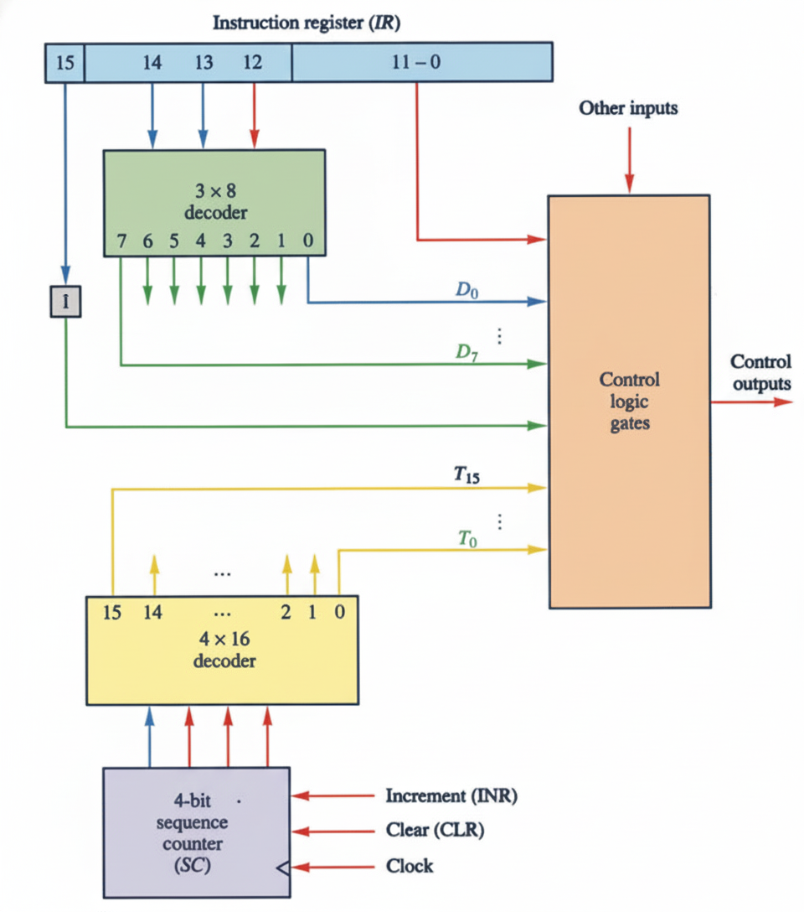
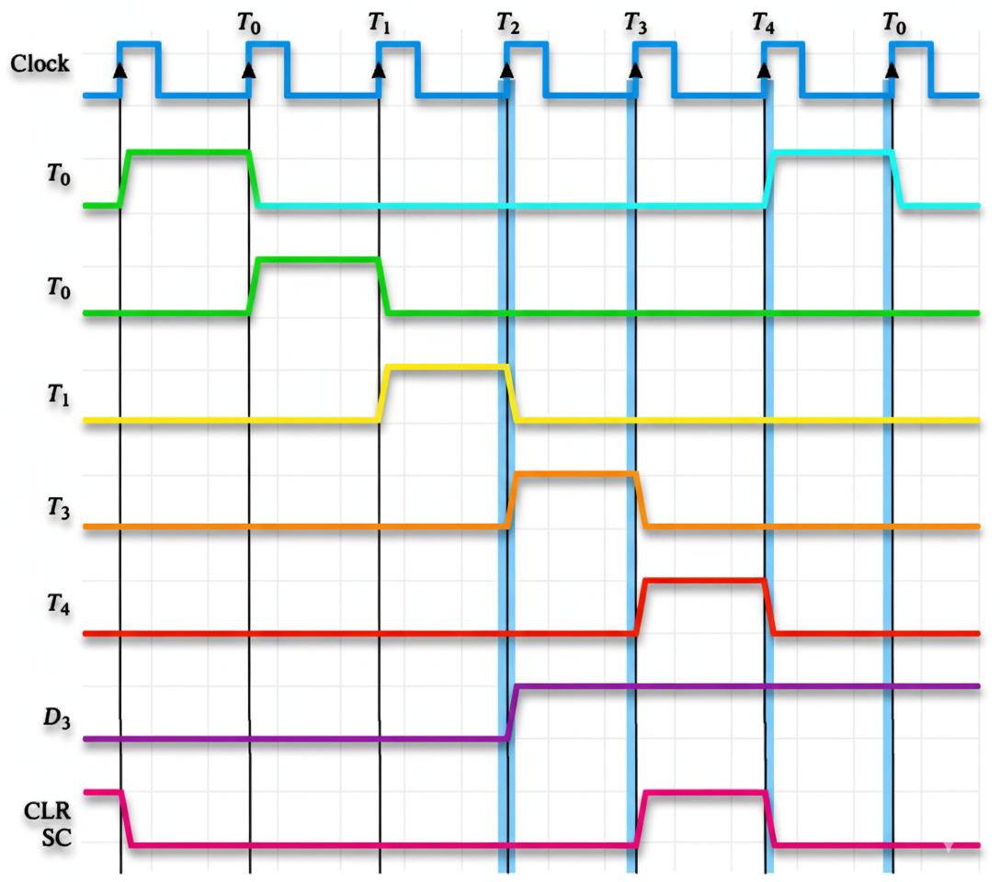

⏰Introduction to Timing and Control
The control unit, a critical part of the CPU, is responsible for initiating the sequence of micro-operations that execute instructions. All timing in the basic computer is regulated by a master clock generator that produces clock pulses applied to all flip-flops and registers throughout the system.
⚙️Control Unit Implementations
🔧Hardwired Control Unit
- Implementation: Uses combinational logic circuits (AND, OR, NOT gates) and sequential logic circuits (flip-flops)
- Flexibility: Less flexible - behavior fixed by physical wiring
- Modifications: Require physical alterations to circuitry
💾Microprogrammed Control Unit
- Implementation: Uses microcode stored in special control memory (ROM)
- Flexibility: More flexible - behavior can be modified through software
- Modifications: Easy updates by changing microcode without hardware changes
🖥️Hardwired Control Unit

A typical hardwired control unit includes several key components working together:
- Instruction Register (IR): Holds the current instruction being executed
- 3x8 Operation Decoder: Decodes the 3-bit opcode (bits 12-14) into 8 outputs (D0 to D7)
- 4x16 Timing Decoder: Decodes the 4-bit sequence counter output
- 4-bit Sequence Counter (SC): Generates 16 timing signals (T0 through T15)
- Control Logic Gates: Combine decoder outputs to generate specific control signals
Timing Signals
Click on timing signals to see their functions in the instruction cycle!
🧩Clearing of Sequence Counter (SC)

Understanding how D₃T₄ = 1 clears the counter in a digital timing sequence
In a control timing circuit, specific combinations of decoder outputs and timing pulses determine how the sequence counter (SC) progresses or resets. When the control function D₃T₄ = 1 becomes active, it triggers the clear operation on SC.
🔄Instruction Cycle Phases
Fetch Instruction
T1: IR ← M[AR],
PC ← PC + 1
Transfer PC to Address Register, then fetch instruction from memory and increment PC
Decode Instruction
AR ← IR(0-11)
I ← IR(15)
Decode opcode, transfer address bits to AR, and set mode bit
Effective Address
Read effective address if indirect addressing is used
Execute Operation
Perform the actual operation specified by the instruction
🎛️Control Logic Outputs
The control logic circuit generates various outputs to manage computer components:
Register Control
Signals to load, increment, or clear registers (AR, PC, DR, AC, IR, TR, etc.)
Memory Control
Read and Write signals for memory operations
Bus Control
Selection signals (S2, S1, S0) for common bus
ALU Control
Signals for arithmetic and logic operations
📋Microprogrammed Control
Key Components:
- Microprogram Sequencer: Determines address sequence for control memory
- Control Address Register (CAR): Holds current microinstruction address
- Address Sequencing: Supports incrementing, branching, mapping, and subroutines
- Microinstruction Format: Fields for micro-operations (F1, F2, F3), conditions (CD), branches (BR), and addresses (AD)